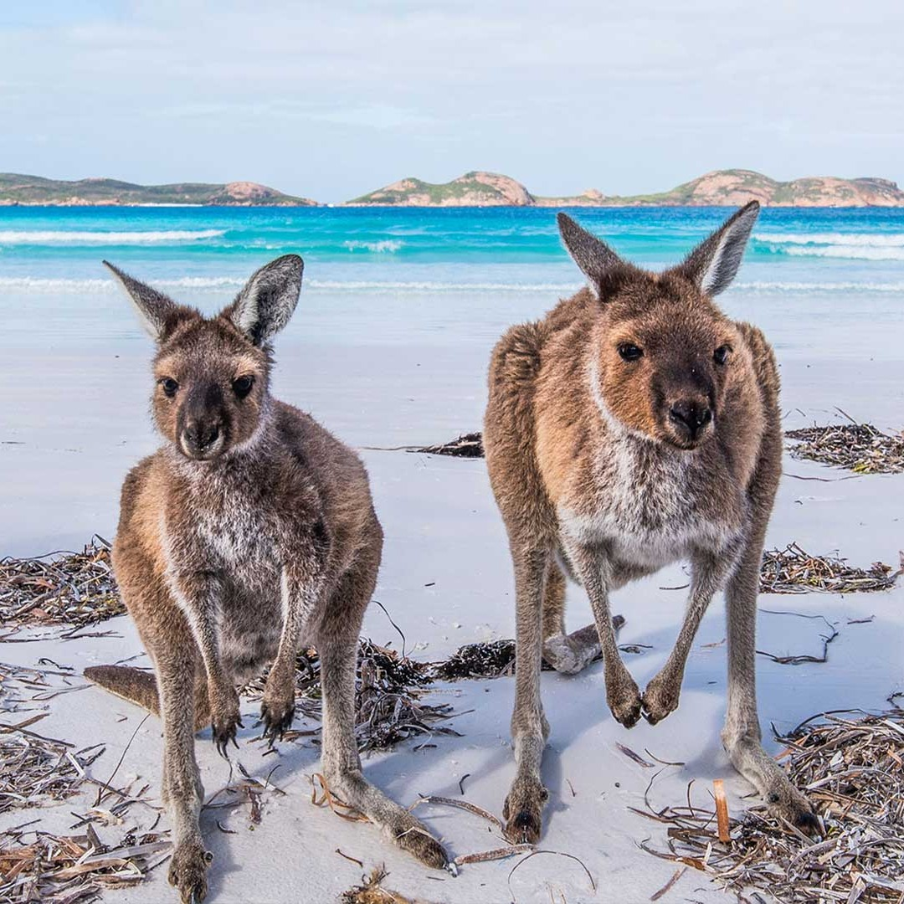
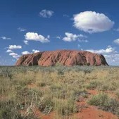

Australia
From the Iconic Sydney Opera House to the Natural Wonders of Uluru
My Australian odyssey began in Sydney, the cosmopolitan gem nestled along the sparkling waters of the Sydney Harbour. The iconic Sydney Opera House, with its sail-like architecture, welcomed me with open arms. My journey would take me beyond this world-famous landmark, but its presence served as a reminder of the cultural richness awaiting me in this thriving metropolis.
In Sydney, I embarked on a memorable sailing adventure on the harbor, which offered unrivaled views of the Opera House, Sydney Harbour Bridge, and the city skyline. The gentle breeze, the sound of lapping waves, and the majesty of the harbor created a tranquil yet invigorating experience. Exploring The Rocks, one of Sydney's oldest neighborhoods, I immersed myself in history. Cobblestone streets, historic buildings, and lively markets brought to life the stories of convicts and settlers who laid the foundations of modern Australia. Sampling local cuisine at the historic pubs, I savored dishes that fused indigenous and colonial flavors.
 My journey continued to the Great Barrier Reef, a UNESCO World Heritage Site and the world's largest coral reef system. Donning scuba gear, I descended into the vibrant underwater world. Among the kaleidoscope of corals and exotic marine life, I encountered giant sea turtles, graceful manta rays, and schools of colorful fish. The reef's biodiversity was simply staggering. Sailing to the Whitsunday Islands, I anchored near Whitehaven Beach, known for its pristine silica sands and crystal-clear waters. I took a leisurely stroll along the shore, my feet sinking into the soft sands as I marveled at the untouched beauty of this coastal paradise.
From the east coast, my journey led me to the heart of Australia, Uluru-Kata Tjuta National Park. Witnessing the grandeur of Uluru, the sacred sandstone monolith, was a deeply spiritual experience. At sunset, I watched as the rock changed hues from ochre to fiery red, a mesmerizing sight that held profound significance for the Anangu indigenous people. Hiking through Kata Tjuta's domed rock formations, I felt a profound connection to the ancient landscape. The rustling of the wind through the valleys and the sense of solitude in the desert wilderness were soul-stirring.
My Australian adventure continued in Melbourne, a city known for its artistic flair and culinary delights. Wandering through the city's laneways, I discovered hidden street art gems that adorned the walls. Each mural told a story, and the laneways themselves were living canvases of creativity. Melbourne's coffee culture was a revelation. I sipped artisanal brews at local cafes, engaging in conversations with baristas who were passionate about their craft. The aromatic coffee and the ambiance of these cozy spaces made for memorable mornings.
 Venturing south to Tasmania, I explored the island's pristine wilderness. Hiking in Cradle Mountain-Lake St Clair National Park, I encountered wombats, wallabies, and the elusive Tasmanian devil. The untamed beauty of the rugged terrain was a testament to Tasmania's status as the "Natural State." Visiting Port Arthur, a former penal colony, I delved into the darker chapters of Australia's history. The haunting ruins and the stories of convicts provided a stark contrast to the island's natural splendor.
My journey concluded in Perth, the laid-back city on Australia's western coast. I reveled in the simple pleasures of life, watching the sunset at Cottesloe Beach, where the golden rays painted the Indian Ocean in a fiery palette. The sense of serenity and connection to nature was palpable. Exploring Fremantle's historic streets, I visited the Fremantle Prison, a World Heritage-listed site that revealed the harsh realities of convict life. The vibrant markets and lively arts scene of Fremantle provided a fitting end to my Australian adventure.
As I reflect on my journey across Australia, I am humbled by the country's diverse landscapes, rich culture, and natural wonders. From the bustling streets of Sydney to the spiritual heart of Uluru, from the artistic laneways of Melbourne to the wilderness of Tasmania, and the serene beaches of Perth, Australia's allure lies in its multifaceted tapestry.
Join me in my future travels as I continue to explore the captivating regions of Asia and Oceania, each offering its own unique blend of beauty and cultural richness. Until next time, keep your wanderlust alive and your heart open to the wonders of the world.